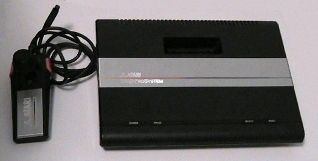
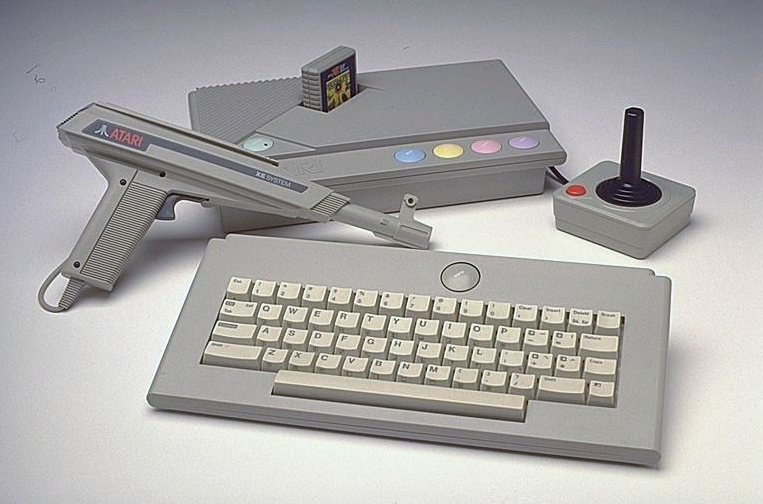
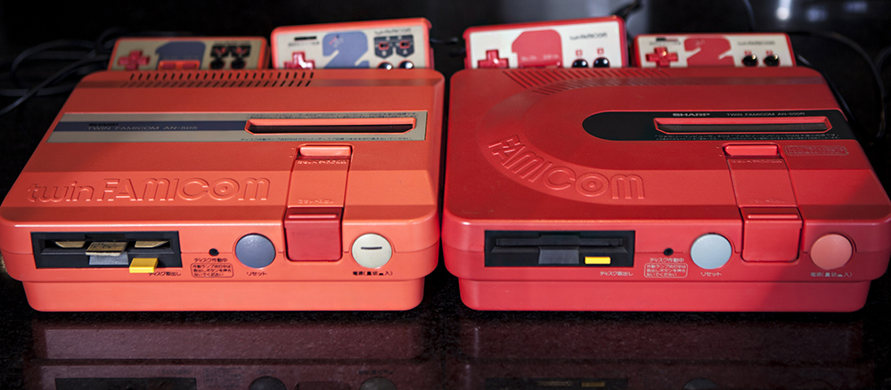

Atari 7800
- Fabricante: Atar.i
- Procesador: Atari SALLY 6502 ("6502C") @ 1.19-1.79MHz.
- Formato: Cartucho.
- Puertos: 2.
- Librería de juegos: 59 propios, también compatible con los de Atari 2600.
- Precio Original: 140$.
- Ventas: Unos 4 millones de consolas.
Atari XEGS
- Fabricante: Atari
- Procesador: MOS Technology 6502C.
- Formato: Cartuchos.
- Puertos: 2 mandos/joystick + 1 teclado.
- Librería de juegos: 32 de propios, es compatible con el software del resto de ordenadores Atari 8-bit.
- Precio Original: 199$.
- Ventas: Desconocidas, aunque menores de 20.000 consolas. La versión PAL es mucho más rara que la NTSC.


Sharp Twin Famicom
- Fabricante: Sharp
- Procesador: 6502 modificado @ 1.79 MHz.
- Formato: Cartucho y FDS (Famicom Disk System).
- Puertos: 2 mandos permanentemente conectados y dos puertos de expansión.
- Librería de juegos: Ver Famicom o NES.
- Precio Original: 32.000 yenes. Unos 250 €.